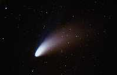
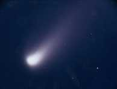
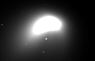
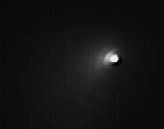
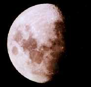
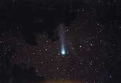
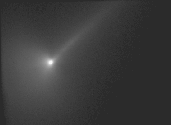
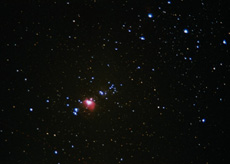
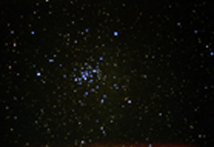

The following is an assorted collection of images acquired using instruments ranging from a 1.8 meter telescope to a simple 35 mm camera. The images were taken by various permutations of Bill and Eileen Ryan, Gil Esquerdo, and Carol Neese.
You can find more planetary images, resources, and information from
the Planetary Science Institute
in Tucson, Arizona.
|  | Comet Hale-Bopp with 210 mm lens at f/3.8. 10-minute exposure with Fuji 800 SG film. The open cluster, M34, was also captured in this image up and to the right of the comet's nucleus. (Bill and Eileen Ryan 4/7/97) |
|  | Comet Hale-Bopp through 5-inch refractor. 4-minute exposure with Kodak 400 Ektachrome film. (Bill Ryan) |
|  | Comet Hale-Bopp using the 20-inch f/16 Cassegrain and ST-6 CCD at Discovery Park. A 3.3 focal reducer was used for this one second exposure. (Bill and Eileen Ryan, Gil Esquerdo 2/22/97) |
|  | Comet Hale-Bopp imaged again using the 20-inch Cassegrain at Discovery Park. In this image, the jet activity and comet's rotation are evident by the "sprinkler effect" seen on the sunward side of the nucleus. (Bill and Eileen Ryan, Gil Esquerdo) |
|  | Moon through 5-inch guide refractor. 1/125 second exposure with Kodak 400 Ectachrome film. (Bill and Eileen Ryan) |
|  | Comet Hyakutake photographed on March 27, 1996 with a 50 mm lens at f/2 on 35 mm Fuji 400 SG file on Mt. Lemmon outside Tucson, Arizona. Image exposed for 2 minutes with a stationary tripod. Notice that, due to the far northerly position of the comet, the star trails are minimized, even with such a relatively long exposure. (Bill and Eileen Ryan 3/27/96) |
|  | Comet Hyakutake imaged using the Vatican Advanced Technology Telescope (VATT) on Mt. Graham, Arizona. (Carol Neese, Bill and Eileen Ryan 3/25/96) |
|  | Orion Nebula (M42) with 210 mm lens at f/3.8. 15-minute exposure with Fuji 800 SG film. (Bill Ryan 4/7/97) |
|  | Beehive Cluster (M44) with 210 mm lens at f/3.8. 15-minute exposure with Fuji 800 SG film. (Bill Ryan 4/7/97) |
| Return to Bill's Home Page |
{kind=link}
{kind=link}
{kind=link}
{kind=link}
{kind=link}
{kind=link}
{kind=link}
{kind=link}
{kind=link}